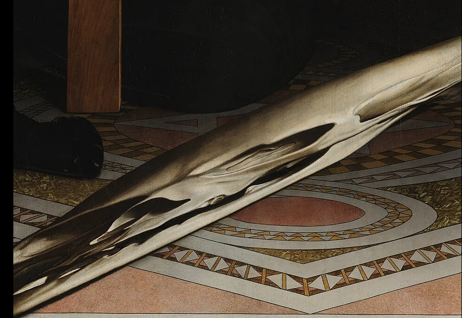

Un teschio che non c’era.
Finché non cambi sguardo.
Non guardare un disegno schematico. Guarda una parte vera degli Ambasciatori di Holbein: quella macchia diagonale, vista frontalmente, nasconde un teschio.
Premi «Rivela» o muovi il cursore. Il frammento viene deformato digitalmente in modo progressivo: vedrai apparire il teschio, senza che ciò rappresenti una ricostruzione dello sguardo originario.
A · Frontalmente, come in museo

L’enigmaA sinistra l’immagine resta ferma, per confrontare ciò che cambia a destra.
B · La rettifica sotto i tuoi occhi
Trasformazione affine stimata dal dettaglio; il punto di vista storico esatto non è ricostruito qui.
Che cosa mostriamo — e che cosa non mostriamo
Questa è una dimostrazione visiva del significato di anamorfosi, non un modello della costruzione prospettica di Holbein. Abbiamo usato una riproduzione bidimensionale autentica e applicato una trasformazione geometrica digitale, scelta per far emergere la figura del teschio.
Non stiamo ruotando fisicamente il quadro in uno spazio tridimensionale; non abbiamo ricostruito né misurato il punto di vista previsto dall'artista. Il cursore mostra un effetto illustrativo, non una verifica sperimentale dell'opera.
Per vedere la vera anamorfosi degli Ambasciatori, bisogna andare davanti al dipinto alla National Gallery di Londra. Qui rendiamo comprensibile il principio, non sostituiamo l'esperienza dell'originale.
Perché un’immagine apparentemente sbagliata?
Il teschio è dipinto per essere guardato da un punto obliquo, non da quello frontale nel quale il resto dell’opera è perfettamente leggibile. La National Gallery conferma che il teschio si rivela da una posizione vicina al lato destro del dipinto.
Una figura deformata sul supporto può essere il progetto accurato di un’immagine da vedere altrove.
E Mantegna?
Non stiamo dicendo che il Cristo morto funzioni come questo teschio. Stiamo mostrando il principio tecnico che rende sensata una domanda: la vista frontale è sempre quella prevista?
La nostra ipotesi sull’inclinazione e sull’eventuale spazio architettonico resta aperta alle verifiche. Ora possiamo tornare ai controlli e alle misure ↗